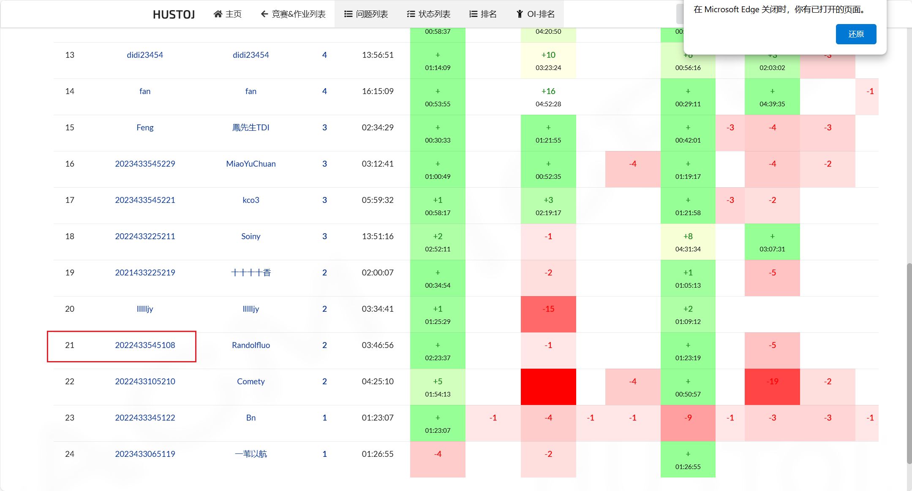
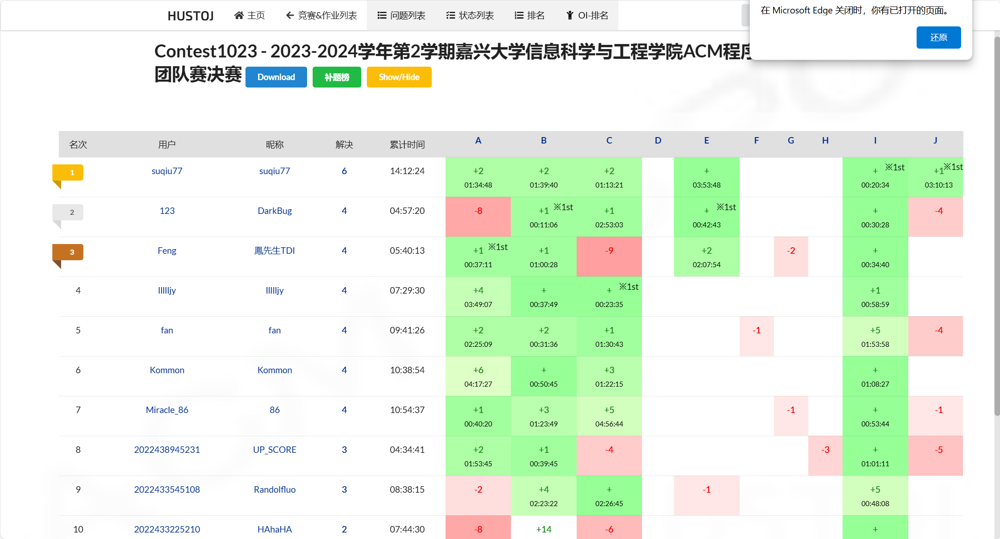
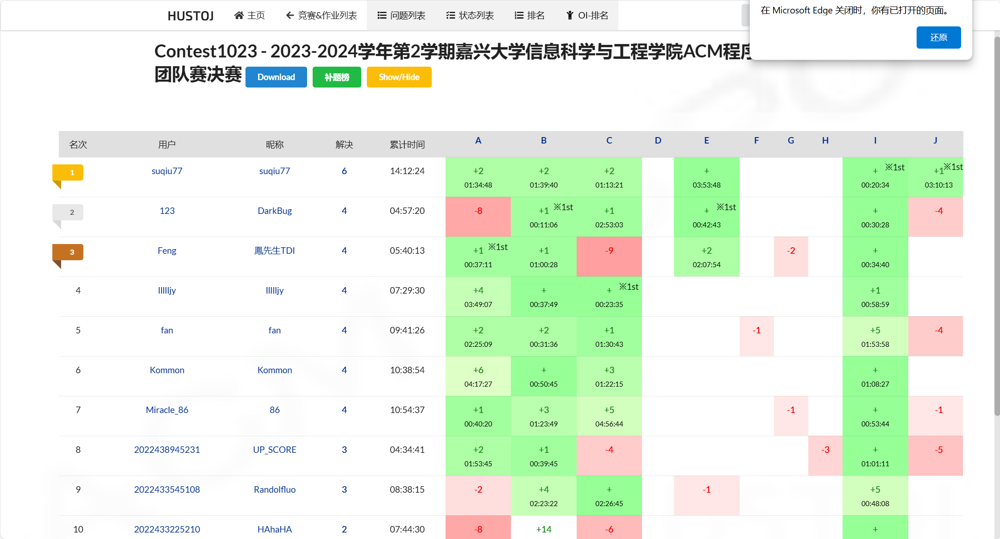

谨以此篇文章
谨以此篇文章，纪念我的算法之路
24年3月，无意间接触到了算法，开始的我只学习了一些基础的数据结构，对算法是根本没了解过，在和另外两位同学的交流中，我们组成了一支队伍去参加了第一次ACM竞赛，在这次比赛的过程中，我第一次感受到算法是如此奇妙，虽然我在这次比赛中只做出来了一题关于线性探测再散列的字符串加密算法，但也是对算法有了初步的了解，也是拿到了第一次成功参与奖（太菜了所以只能拿成功参赛奖）。
后来的三到五月，中间参加了几次院赛，有次院赛运气十分的好，我们队的反应十分快迅速做出来两题，也是给我们抄底到了一枚铜牌（太爽了，拿了一个U盘）。五月份的决赛，当时还是一枚菜鸡，遇到大佬直接被爆杀。
 

一直到24年七月，我才正式开始学习算法，在acwing上看算法基础课，不得不说，y总讲算法讲的是真的好，有些地方讲的十分清晰，动态规划那一部分简直可以称神。暑假留在集训的两个月，真的是大学两年以来收获最大的两个月，学习了很多算法，图论，数论，动态规划等等。而且没有任何事情会来打扰我，全身心的投入算法真的让人很舒服。
九月份，配了一台主机，狠狠把黑神话玩通关了两次，也参加了集训之后的第一次ACM竞赛，终于拿到了第一次金奖，而且是接近ak的金奖（虽然说题目比较水）。

很可惜这次没有ak，主要还是对自己不自信，看见F题全场没人对，就放弃了，其实就是一题很简单的字典序排序匹配。这次过后，我的算法能力也是突飞猛进，在之后的院赛也是拿到了金奖，并参加了2024年ICPC杭州站。这次ICPC的参赛过程，每次想起来都后悔，我们打了个全场倒一并且爆零了，比完赛直接灰溜溜的火速离开了杭师大，主要还是第一次参加这么高级别的赛事，心态上没有调整好吧。
下学期开始，我也开始准备考研，想要去到档次更高的院校。大学的两年课程，切实的让我体会到了双非院校的条件是有多差，没有一点好处，课程全是水课浪费时间的。参加完ICPC之后我也是全身心的投入到考研，学习起了最天书的计组和操作系统。算法的学习就一直推到了25年3月。
大三下开始，我将更多的心思投入到了考研，每天学习八九个小时，在三月之前学习完了数据结构，并参加了ACM校赛选拔，也是在队友的强势带飞下拿到了金奖并获得了参加省赛的资格。我本想着这是一次提升自己的机会，也是一次检验自己的算法能力。可是事与愿违。

25年3月，我主要还是将大部分时间放在考研，在此期间参加了天梯赛和ACM的校赛，一个一等奖一个二等奖。在后来ACM省赛集训开始之后，我便将主要的时间转移到学习算法上了。
考研和算法一起准备真的不是人能承受的事，一边是数学的积分，求导，连续求极限，一边是英语的单词，一边又是算法的dp，图论，数论。我十分后悔自己为什么没有早早规划，对自己专业的竞赛和学习了解的太迟，别人早早在大一大二便开始准备算法比赛，在蓝桥杯，ACM，天梯赛中都有获得奖项，而我就是一个什么专业奖项都没有的菜鸡，于是我就开始不断压缩自己的其余时间，不断的学习算法，想要获得一些竞赛奖项，可以为研究生复试提供一些优势。可是，还是做不到啊。

四月份开始，我把大部分时间放在了算法，参加了蓝桥杯javaB组，现在不知道成绩如何，参加了天梯赛国赛，只拿了八十分，什么奖都没有。最遗憾的还是一直作为目标的ACM省赛，也没有获得奖项，比赛的过程中，我们在前一个小时将两道签到题做出来了，之后的四个小时，我们一道题都没有做出来，真的感觉到了一种无力感，贪心不会，最后等比赛结束后出来，得知了另外一道题是树形dp，听到之后简直天塌了，根本就不会啊。为什么会这样，我就只是想拿一些奖项能够给我的大学生活添加一些色彩，可是好像都事与愿违。到底要多遗憾才算遗憾呢。从头到尾学习了几百小时的算法，在一次一次的比赛中失利，同时也浪费了自己前期为考研准备的时间。接下来的路该怎么走啊。还是后悔没有早点开始准备比赛啊。写到这里也不知道该说什么好了，接下来就好好准备数学竞赛和考研吧。